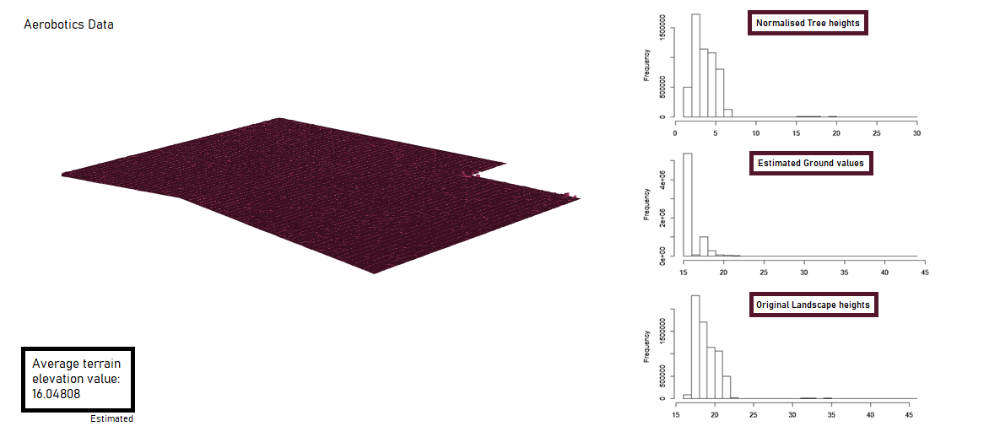
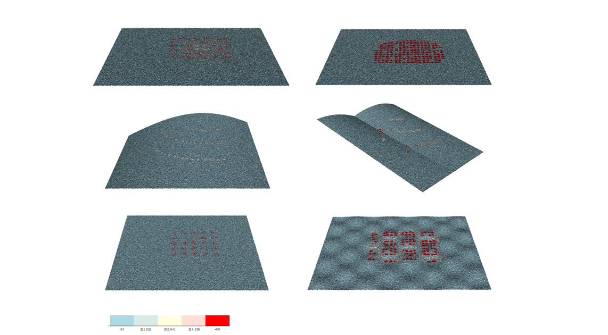
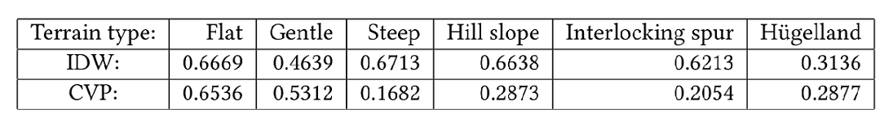

The ground estimation process is used to determine the heights of the terrain beneath tree canopies in a digital elevation model (DEM). This process involves interpolating over masked DEMs and the interpolation methods used are Contextual Void Patching (CVP) and an inverse distance weighting (IDW) method, Local Modified Shepard algorithm. The estimated terrain is subtracted from the original DEM to obtain the final output of the system: the normalised DEM — containing only above-ground heights of trees in the orchard.
Figure 1: Ground estimation result from Aerobotics-provided DEM.
Sample DEMs of orchards were provided by Aerobotics in the form of single-band TIFF images. The DEM Generation subproject provided DEMs of landscapes with varying slope types and canopy types. The terrain types are: flat plane, gentle sloping plane, steep sloping plane, hill slope, interlocking spur slope and hügelland (hillocks). The canopy types are: wide canopies, small overlapping canopies and small spaced canopies. These DEMs were used to evaluate both interpolation methods.
The performances of CVP and IDW (Shepard) are evaluated qualitatively by visually comparing the estimated DEMs against the expected landscape. An error map is also generated to show the distribution of the error for each landscape. Quantitatively, the following error test statistics were calculated and compared for each combination of terrain and canopy type:
Estimation methods produced generally consistent results on different terrain types, but fared worst on hügelland DEMs. The canopy type did not affect the estimation accuracy greatly, but high magnitude error appeared to be localised about the centers of individual canopies. Noise in the DEMs contributed to error, especially in one of the DEMs of a gentle slope. Below are some results from the evaluation of the IDW (Shepard) results.
Figure 2: RMSE values from IDW (Shepard) results.
Figure 3: Series of error maps produced from the IDW (Shepard) results.
(Left-to-right) Top row: flat plane, gentle sloping plane. Middle row: hill slope, interlocking spur slope. Bottom row: Steep sloping plane, hügelland (hillocks).
CVP was outperformed by the IDW (Shepard) interpolation method for all terrain types except the hügelland terrain [CVP RMSE ~5.9; IDW RMSE ~6.2]. However, the Kappa statistics suggest that IDW (Shepard) results for hügelland had marginally better agreement with the initial landscape.
Table 1: Average Kappa statistic by terrain type.
created with
Website Builder Software .